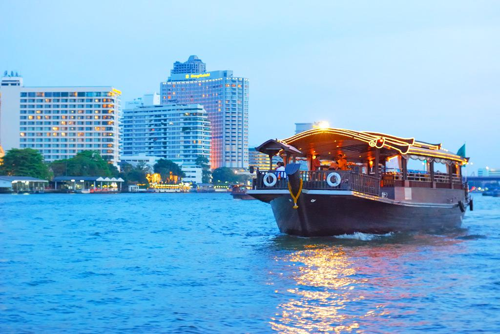
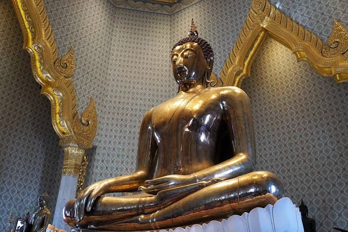
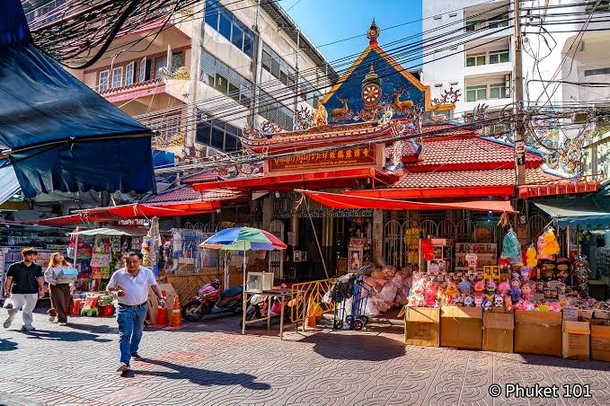
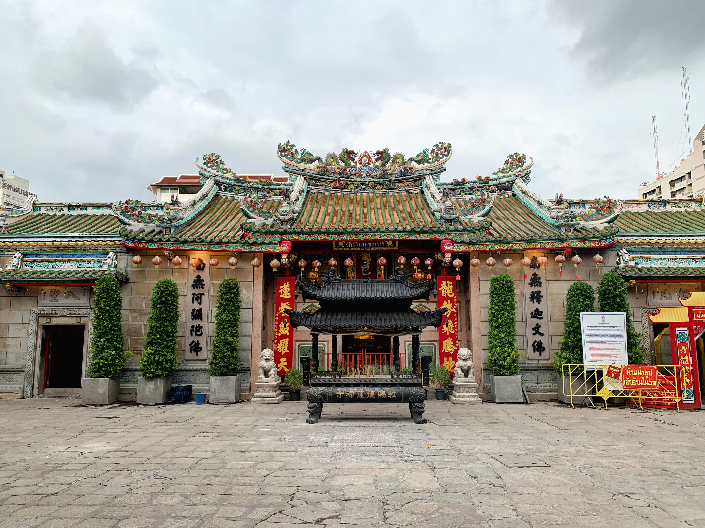
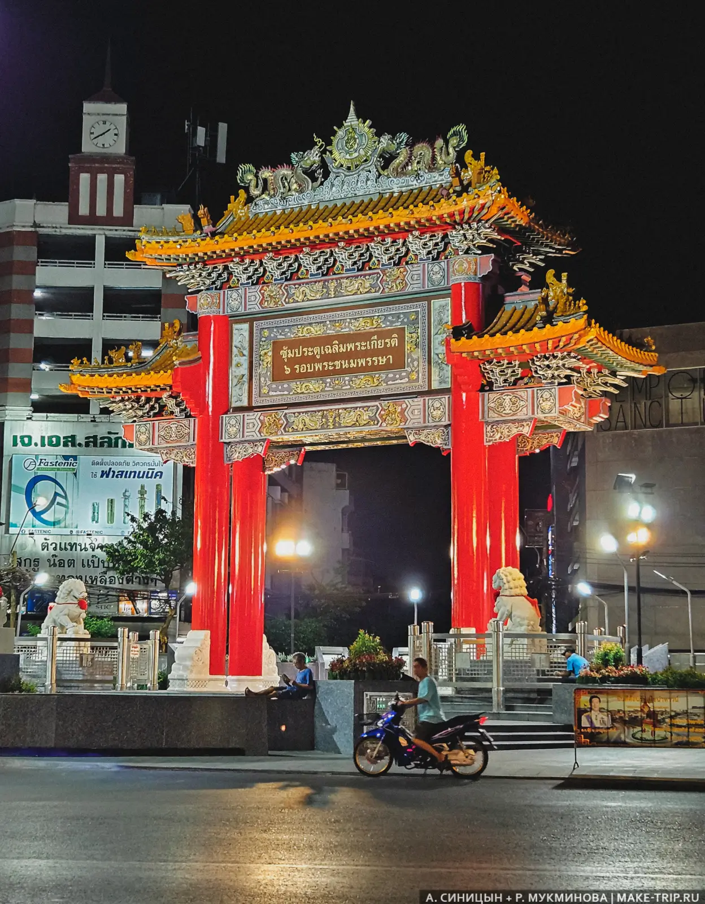
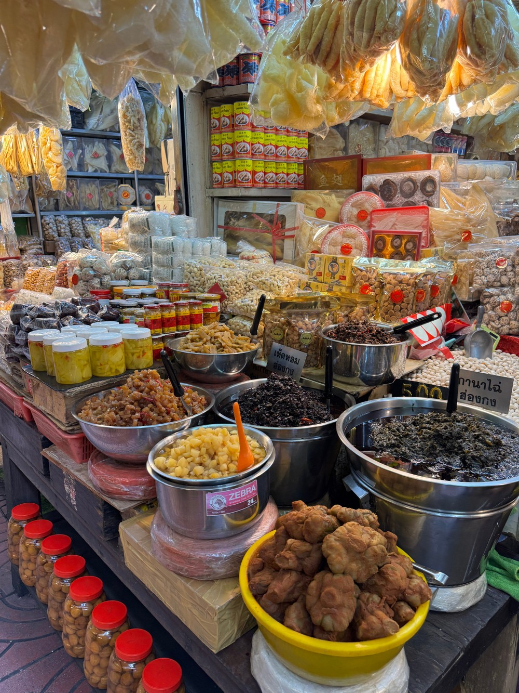
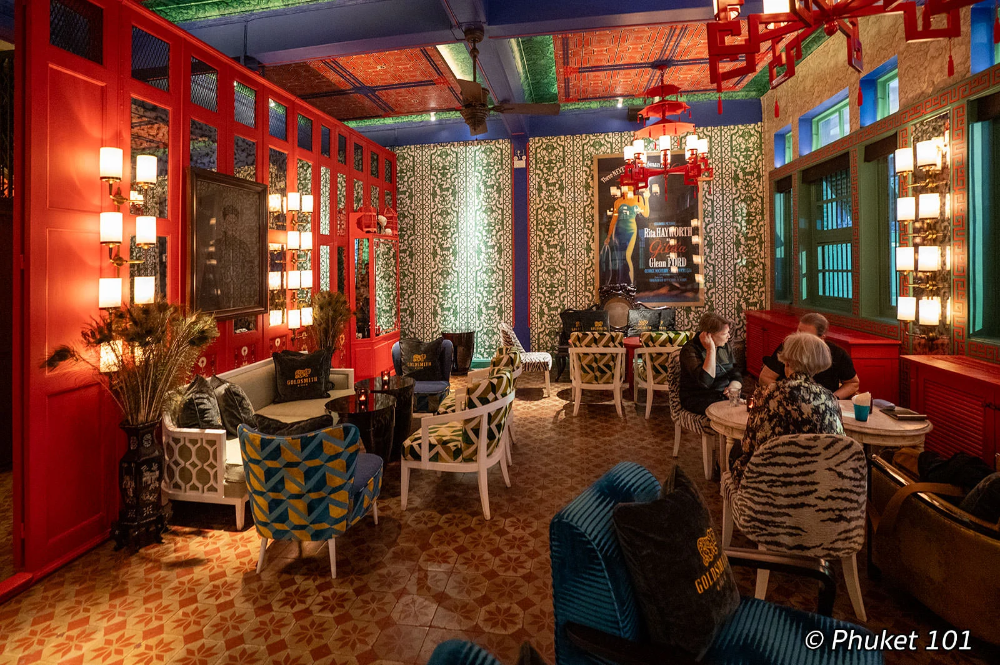

Чайна-таун — китайский квартал Бангкока

Чайна-таун Бангкока, или Yaowarat, — один из самых атмосферных и необычных районов города. Здесь узкие улицы соседствуют с огромными вывесками, китайскими храмами, рынками, ювелирными магазинами и многочисленными уличными кафе.
Главная улица района — Yaowarat Road. Днём здесь кипит обычная торговая жизнь, а вечером улица превращается в одно из самых известных мест Бангкока для уличной еды. Туристы приезжают сюда попробовать морепродукты, лапшу, десерты и другие блюда тайской и китайской кухни. Чайна-таун особенно интересен вечером, когда загораются многочисленные неоновые вывески, открываются уличные палатки с едой и район становится ещё более оживлённым.
Где находится
Чайна-таун находится в центральной части Бангкока, в районе Samphanthawong.
Главная улица района — Yaowarat Road. Рядом также находятся улицы Charoen Krung, Song Wat и Sampheng. Район расположен недалеко от реки Чао Прайя, поэтому посещение Чайна-тауна можно объединить с прогулкой по реке.
Стоимость посещения
Вход в Чайна-таун бесплатный.
Можно совершенно бесплатно гулять по улицам района, фотографировать здания и посещать многие храмы и святыни. Отдельно оплачиваются еда, покупки, вход в некоторые достопримечательности и пожертвования в храмах.
Время работы
Сам район открыт круглосуточно.
Однако большинство магазинов и рынков работают преимущественно днём, а главная улица Yaowarat становится особенно оживлённой вечером. Лучшее время для прогулки — примерно с 17:00 до 22:00. В это время можно увидеть район в его главном виде: с неоновыми вывесками, уличной едой и большим количеством людей.
Как добраться
MRT
Самый удобный способ — воспользоваться метро MRT.
Нужно доехать до станции Wat Mangkon на синей линии. От станции можно быстро дойти пешком до Yaowarat Road и главных улиц Чайна-тауна.
Другой вариант — доехать до станции Hua Lamphong. От неё можно пешком дойти до района через улицы китайского квартала.
Такси или Grab
До Чайна-тауна можно также доехать на такси или воспользоваться приложением Grab.
Однако вечером на Yaowarat Road часто бывает плотное движение, поэтому MRT обычно является более удобным вариантом.
На лодке
До района можно добраться и по реке Чао Прайя. Один из вариантов — выйти на причале Ratchawong, после чего пройти пешком до Sampheng и Yaowarat.
Что посмотреть в Чайна-тауне
Чайна-таун интересен не одной конкретной достопримечательностью. Сам район представляет собой большую прогулочную зону, где интересные места постоянно встречаются прямо по пути.
Yaowarat Road

Yaowarat Road — главная улица Чайна-тауна и его центр.
Днём здесь можно увидеть магазины, ювелирные лавки, китайские рестораны и обычную городскую жизнь.
Вечером улица полностью меняется: появляются многочисленные торговцы уличной едой, загораются вывески, а тротуары становятся заполнены туристами и местными жителями.
Чайнатаунские неоновые вывески

Одной из визитных карточек Yaowarat являются огромные неоновые вывески, расположенные вдоль улицы.
Именно вечером они создают характерную атмосферу района и становятся отличным фоном для фотографий.
Лучшие фотографии можно сделать после наступления темноты, когда вывески уже полностью освещены.
Wat Traimit и Золотой Будда

Wat Traimit — один из самых известных храмов рядом с Чайна-таун. Главная достопримечательность храма — огромная статуя Золотого Будды.
Статуя выполнена из чистого золота и считается одной из самых известных буддийских статуй Бангкока.
Храм удобно посетить в начале прогулки, особенно если вы начинаете маршрут от станции Hua Lamphong.
Sampheng Market

Sampheng Market — большой рынок, расположенный в узких переулках Чайна-тауна.
Здесь продаются аксессуары, игрушки, сувениры, одежда, украшения, товары для дома и различные мелочи.
Многие магазины ориентированы на оптовую торговлю, поэтому некоторые товары продаются наборами или сразу в большом количестве.
Wat Mangkon Kamalawat

Wat Mangkon Kamalawat — один из главных китайских буддийских храмов Бангкока.
Храм сочетает элементы китайской буддийской, даосской и конфуцианской традиций.
Внутри можно увидеть многочисленные статуи божеств и традиционные китайские элементы оформления. Храм находится недалеко от станции Wat Mangkon.
Chinatown Gate

Chinatown Gate — большие китайские ворота, расположенные на площади у входа в исторический китайский квартал.
Ворота являются одним из символических входов в Чайна-таун и популярным местом для фотографий.
Особенно эффектно они выглядят вечером, когда включается подсветка.
Уличная еда
 |
 |
Уличная еда — одна из главных причин посетить Чайна-таун.
Вдоль Yaowarat Road и соседних улиц вечером открывается большое количество уличных кухонь и небольших ресторанов.
Здесь можно попробовать морепродукты, китайскую лапшу, димсам, жареные блюда, супы, фрукты и различные десерты.
Лучше всего просто пройтись по улице и выбрать место, где готовят прямо перед вами.
Что попробовать
Чайна-таун считается одним из лучших районов Бангкока для знакомства с уличной едой.
- морепродукты — креветки, кальмары, крабы и различные виды рыбы;
- китайскую лапшу и супы;
- димсам;
- жареный рис и лапшу;
- манго и другие тропические фрукты;
- китайские и тайские десерты;
- чай и традиционные китайские напитки.
Не обязательно заранее искать конкретный ресторан. Иногда интереснее просто гулять по Yaowarat и выбирать понравившиеся уличные точки по запаху и количеству посетителей.
Что находится рядом
Чайна-таун расположен в исторической части Бангкока, поэтому рядом находится большое количество других интересных мест.
Река Чао Прайя проходит недалеко от Чайна-тауна. Можно совместить прогулку по району с поездкой на речном транспорте и увидеть Бангкок с воды.
Talat Noi
Talat Noi — старый район рядом с Чайна-тауном, известный узкими улицами, старинными зданиями, граффити и небольшими кафе.
Его удобно посетить после прогулки по Yaowarat, особенно если хочется увидеть более спокойную сторону исторического Бангкока.
ICONSIAM находится на другом берегу Чао Прайя. После прогулки по Чайна-тауну можно отправиться туда на речном транспорте и продолжить вечер у реки.
Ват Арун находится дальше по течению Чао Прайя. Его посещение можно объединить с прогулкой по историческому центру Бангкока и поездкой по реке.
Важное для туристов
Лучше приходить вечером. Днём Чайна-таун интересен как торговый район, но именно после захода солнца Yaowarat превращается в главное место для уличной еды и вечерних прогулок.
Будьте готовы к большому количеству людей. На главных улицах вечером бывает очень многолюдно.
Следите за вещами. В толпе лучше держать телефон, кошелёк и другие ценные вещи при себе.
Не ограничивайтесь Yaowarat Road. Интересные рынки, храмы, магазины и небольшие улицы находятся и в соседних переулках.
Берите с собой наличные. В небольших уличных заведениях и на рынках оплата картой может быть недоступна.
Осторожно переходите дороги. Несмотря на большое количество пешеходов, в районе остаётся активное движение автомобилей, мотоциклов и тук-туков.
Уважайте храмы. При посещении религиозных мест стоит соблюдать спокойное поведение и соответствующий дресс-код.
Как лучше провести время в Чайна-тауне
Лучше всего начать прогулку ближе к вечеру, чтобы сначала посмотреть исторические места, а затем остаться на Yaowarat после наступления темноты.
Например:
- 16:00 — приезд к станции MRT Hua Lamphong;
- 16:15 — посещение Wat Traimit и Золотого Будды;
- 17:00 — прогулка до Chinatown Gate;
- 17:30 — прогулка по Yaowarat Road;
- 18:00 — посещение Wat Mangkon Kamalawat;
- 19:00 — ужин с уличной едой;
- 20:00 — прогулка по вечернему Чайна-тауну;
- 21:00 — Sampheng и соседние улицы;
- 22:00 — прогулка к реке или возвращение на MRT.
Такой маршрут позволяет увидеть Чайна-таун и днём, и вечером, а также попробовать главную особенность района — разнообразную уличную еду.
Что запомнить
Чайна-таун — одно из лучших мест для знакомства с другой стороной Бангкока. Здесь сочетаются китайская культура, буддийские храмы, старые торговые улицы, огромные неоновые вывески, рынки и одна из самых известных сцен уличной еды в городе. Днём район показывает свою торговую и историческую сторону, а вечером превращается в шумное и яркое место для прогулок. Если Маханакхон показывает современный Бангкок с высоты, а ICONSIAM — его современную сторону у реки, то Чайна-таун позволяет почувствовать старый, живой и совершенно другой Бангкок.